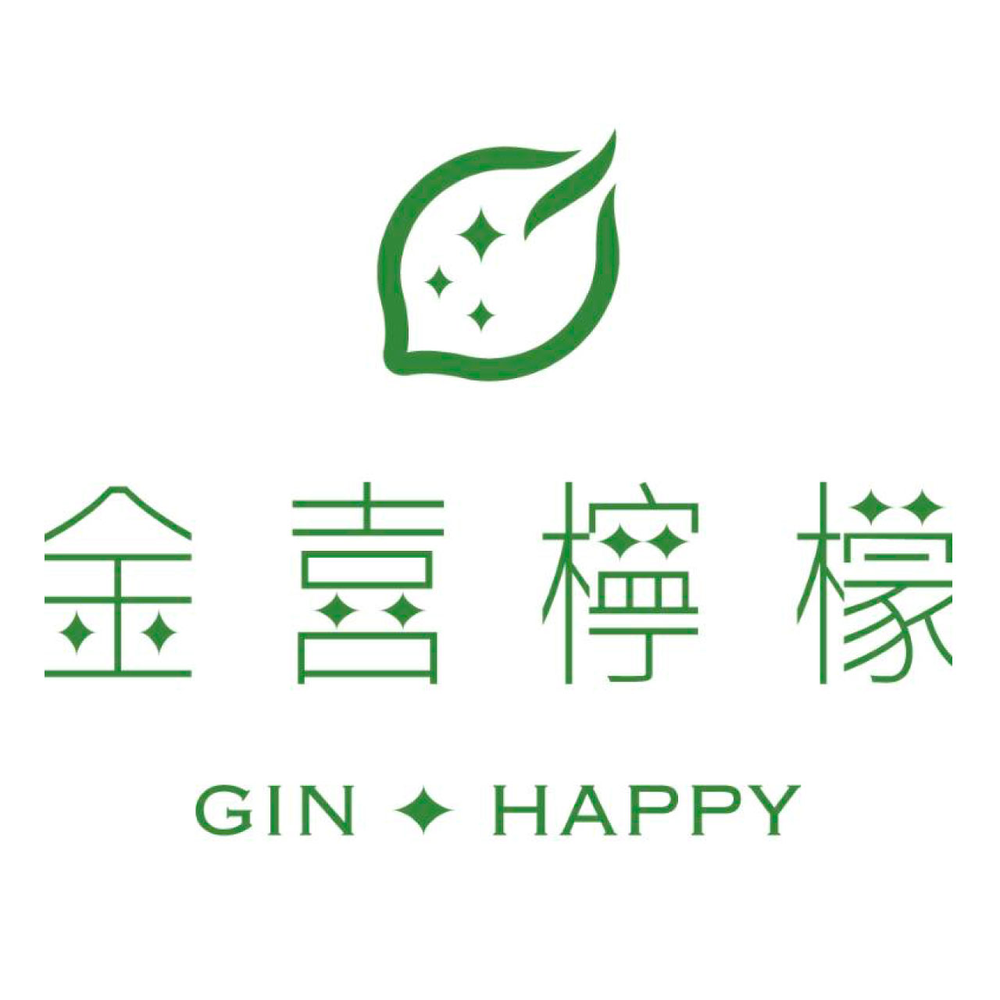
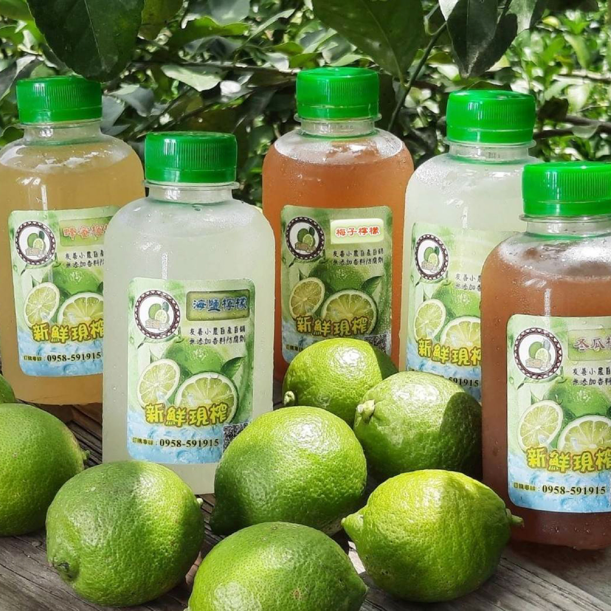
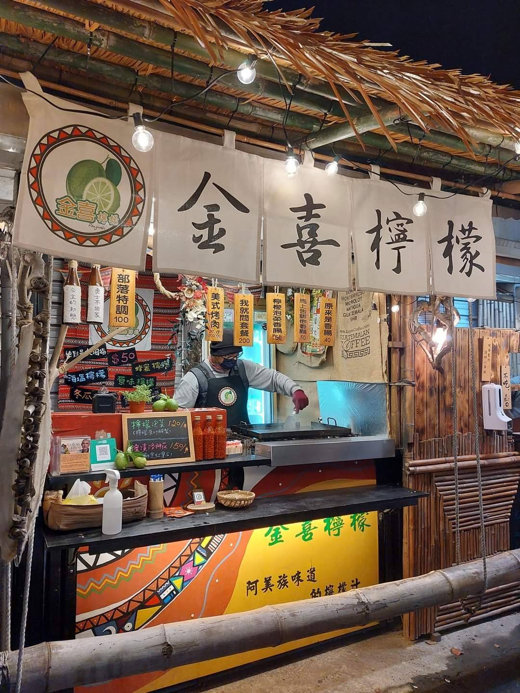

01
有根的產地故事
從父輩種下檸檬，到青年返鄉接棒。把真實人物與玉里的土地寫清楚，讓送禮者知道這份心意來自哪裡。

GIN HAPPY · YULI
一份有產地故事的伴手禮，需要一個讓人看懂、信任，也方便購買的入口。這份提案以品牌官網為基礎，連接年節送禮與日常商品的搜尋需求，讓金喜的好持續被認識。
看看搜尋如何帶來生意 ↘金喜檸檬｜品牌官網與搜尋成長提案

SEO 的價值，是讓品牌在買家提出問題時，有機會進入他的選擇名單。
想送有特色的禮物，或找一道好吃的料理。
搜尋花蓮伴手禮、檸檬商品與使用方法。
看內容物、價格、保存、產地與到貨方式。
從實拍、人物與產品說明了解品牌。
進入商品頁、提出訂購或採購詢問。
從父輩種下檸檬，到青年返鄉接棒。把真實人物與玉里的土地寫清楚，讓送禮者知道這份心意來自哪裡。
飲品、調味粉與泡菜，分別對應解渴、料理與餐桌搭配。每一類都能形成自己的搜尋入口。
以品牌公開介紹的 Mipaliw 互助精神，呈現族人與加工的真實故事，讓商品價值有具體依據。
延續社群與市集對品牌的認識，用網站保存完整資訊，讓看過、喝過、買過的人容易再找到金喜。
首頁、商品與訂購資訊使用一致的品牌名稱與資料，提供清楚的官方入口。
用商品頁呈現口味、容量、成分、保存與配送，讓買家更容易比較。
社群連結、市集 QR 與 Google 搜尋導向對應商品或禮盒頁，讓行動更直接。
先解決買家的疑問，再讓他看見對應商品與購買方式。網站與 SEO 的工作，要一起完成這條路徑。
例如「花蓮伴手禮怎麼選」「檸檬胡椒鹽怎麼用」。
以商品、選購指南或料理實作提供清楚答案。
讓搜尋引擎理解頁面主題、來源與品牌關係。
讓讀完的人容易找到規格、價格與下一步。
研究搜尋詞，能幫助判斷買家在找商品、比較選項，還是需要使用方法。不同意圖由不同頁面回答。
把內容物、容量、保存與配送寫清楚，讓搜尋或社群帶來的興趣有地方繼續了解。
可長期使用的料理、選購與產地內容，能在不同檔期繼續連回商品；成效由真實搜尋與詢問資料檢視。
讓內容先對人有幫助，也讓搜尋系統容易理解。
Google AI 摘要會整合相關網頁資訊，並提供來源連結。買家可能從整理後的答案認識一個品牌。
商品名稱、產地、用法與保存資訊保持一致；以原創照片與可核對的資料支持說明。
Google 官方說明，沒有額外必備的特殊標記；網站仍需可收錄、內容有幫助，實際呈現與引用由搜尋系統決定。
| 買家可能問的問題 | 頁面提供的內容 | 如何連回金喜 |
|---|---|---|
| 花蓮伴手禮怎麼挑？ | 送禮對象、組合、保存與配送比較 | 禮盒頁與訂購入口 |
| 檸檬海鹽、檸檬胡椒鹽怎麼用？ | 品牌實作料理、用量與搭配 | 調味粉商品頁 |
| 檸檬泡菜適合搭配什麼？ | 吃法、口味與保存說明 | 泡菜商品頁 |
| 金喜檸檬來自哪裡？ | 人物、產地與部落合作的公開故事 | 品牌故事與商品總覽 |
| 方式 | 本案的角色 | 觀察指標 |
|---|---|---|
| 品牌網站 | 集中商品與訂購資訊，承接各種來源 | 商品瀏覽、詢問完成 |
| SEO 自然搜尋 | 累積品牌以外的搜尋入口 | 非品牌曝光、點擊、有效詢問 |
| Google 廣告 | 依預算與投放條件補充付費曝光 | 有效詢問成本與成交 |
| IG／FB／市集 | 延續日常互動，把興趣導回對應頁面 | 導流、回訪與來源成交 |
| AI 摘要 | 搜尋系統引用公開內容的呈現機會 | 固定問題觀察與可辨識的來源流量 |
Google Search Console、GA4 與詢問紀錄分別觀察搜尋、進站及成交；AI 回答的人工觀察另行記錄，避免把不同口徑的數據混在一起。
每條搜尋路徑，都有自己的問題、內容與行動入口。網站不只展示商品，也協助買家做決定。
用內容物、實拍、組合比較、到貨資訊與產地故事，回答「這份禮送給誰、為什麼值得選」。
路徑：送禮內容 → 禮盒頁 → 訂購／採購詢問
讓飲品、調味粉與泡菜各自有完整介紹，再用料理與保存內容連回商品。
路徑：使用問題 → 商品頁 → 購買與回購
讓搜尋金喜、玉里與在地特色的人，讀到一致的人物、土地與品牌資料。
路徑：品牌／在地搜尋 → 產地故事 → 商品與造訪資訊
用清楚的商品實拍、內容物與組合比較，讓買家判斷適合的對象與場合。
在頁面呈現訂購、保存、配送與出貨資訊，減少來回詢問。
用玉里產地、人物與部落合作故事，補足商品照片以外的選擇理由。
一般訂購讓人快速找到入口；企業採購以數量、到貨日期與需求表單協助承接。
一句話說明品牌價值，帶到禮盒、日常商品與產地故事。
組合實拍、內容物、價格、保存與配送資訊。
飲品、調味粉、泡菜各自清楚介紹，互相串接使用內容。
人物、土地與部落合作的真實照片和文字。
以實作、用法與保存資訊解答問題，連回對應商品。
讓個人訂購與企業需求都有容易找到的入口。
本輪 Google Ads 實查中，「金喜檸檬」平均每月 320 次搜尋；「花蓮伴手禮」6,600 次、「過年伴手禮」1,300 次。先建立品牌與商品入口，再逐步經營相關需求。
320 次／月
讓正在找品牌的人，容易找到完整商品與訂購資訊。
6,600 次／月
把在地特色與送禮選擇連回金喜的商品與故事。
260 次／月
以採購資訊與需求表單，承接較具體的送禮詢問。
「過年伴手禮」全年平均 1,300 次／月，2025 年 12 月為 2,400 次，2026 年 1、2 月各 6,600 次。以下呈現歷史月趨勢，協助安排內容與檔期，並非 2027 年需求預測。
公開頁面查閱日期：2026/11/09。上述為內容布局參考，不代表同業的排名或流量。
品牌入口與購前問題先做好，料理與選購內容持續累積。廣告競爭程度不是 SEO 排名難度，頁首出價也不是品牌的成交價值。
從原本的問題、執行內容與搜尋趨勢，理解內容如何協助品牌被認識，再看客戶回報的詢問與訂單。
來源：品牌成效案例資料，整理基準日 2026/09/18。搜尋數據、網站上線日期及業主回饋分開標示；合作期間成果包含商品、網站與多渠道經營影響，不能歸因於單一 SEO。個別成果不代表金喜檸檬的保證結果。
春節有明確檔期；SEO 則需要持續經營。兩條工作線各有任務，讓近期推廣與長期成長能一起推進。
以春節伴手禮頁作為第一個檔期入口，連接社群與市集的既有互動。年前的重點是商品展示、訂購資訊與推廣承接；自然搜尋則透過後續內容逐步累積。
建立品牌管理帳號與網站架構，整理商品頁、產地故事與訂購入口。
優先呈現組合實拍、內容物、價格、保存與配送；讓社群與市集可直接導流。
發布第一批10篇，優先覆蓋送禮、調味粉、飲品與泡菜的購前問題。
發布第二批10篇，延伸料理與選購情境，安排下一年度的節慶內容。
檢視曝光、點擊、商品瀏覽與詢問品質，調整後續主題與承接頁面。
發布節奏與建站交付時程依專案啟動排程執行；文章篇數分配於整個服務期間。
文章以選購、使用與品牌特色分工，連到對應商品，減少相似內容重複。
網站提供持續經營的基礎，SEO 文章逐步增加搜尋入口。以下呈現整份合約總價、總篇數、服務期間與付款方式。
品牌網站、RWD手機版、效能與搜尋基礎設定，讓內容容易閱讀與被理解。
關鍵字布局、文章製作與圖文編排，將選購、料理與產地內容連回商品。
以 Search Console、GA4 與詢問紀錄觀察成效，規劃下一階段投入。
建立網站與核心內容起點
持續累積主題與檔期內容
長期經營內容與搜尋資產
三年方案的約 NT$8,333，是整份合約總價除以36個月的平均成本；實際付款為最多24期、每期NT$12,500。上述方案皆未稅，正式服務範圍與付款條件以報價及合約為準。
完成品牌與商品資訊，讓第一批10篇內容連到禮盒與日常商品。
延伸第二批10篇，運用首年的搜尋與詢問結果安排主題。
將今年取得的資料用於下個年節，持續改善內容與接單資訊。
購物車、線上金流、會員、預約、多語系與客製功能採專案報價；媒體投放費另計。網站頁數、主機維護、交付項目與成效檢視頻率列於正式服務範圍。
從被看見到實際成交，各階段使用相對應的資料，才能知道哪些主題值得持續投入。
品牌與非品牌搜尋分開觀察。
看買家進入哪些商品與內容。
觀察表單送出、電話與外部購買入口點擊。
記錄需求、數量與到貨日期。
以實際訂單與來源紀錄看結果。
觀察搜尋詞、曝光、點擊及頁面變化，理解哪些需求開始接觸品牌。
觀察來源、內容閱讀與行動；外部購買入口點擊與實際成交分開統計。
由接單紀錄補上有效詢問、成交與來源，連接網站以外的交易。

本提案為網站與搜尋成長規劃，頁面示例不代表已完成建置的購物服務。實際成果受商品、內容、競爭、檔期及承接能力影響；服務項目以正式合約為準。